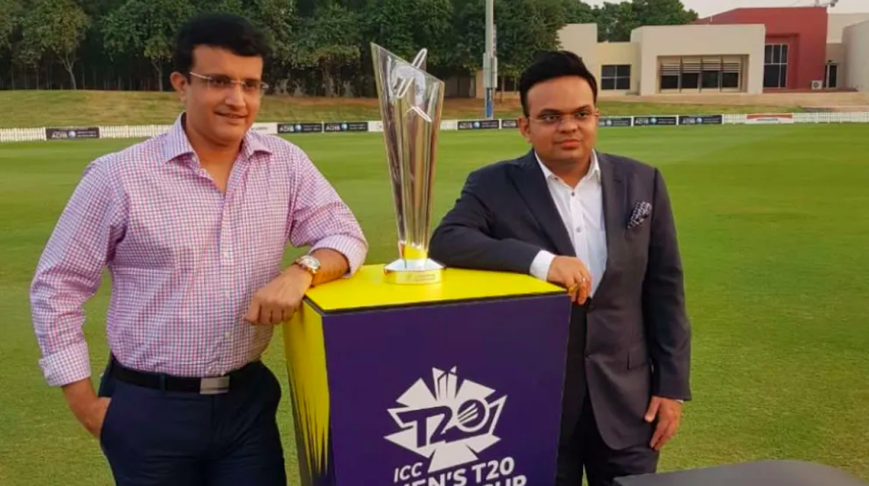
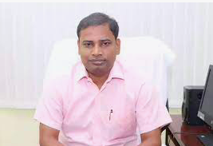
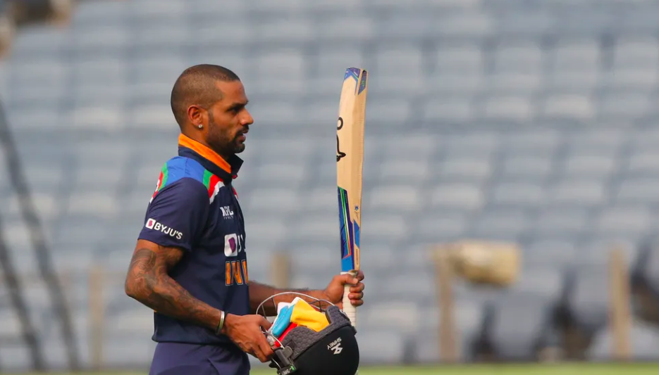
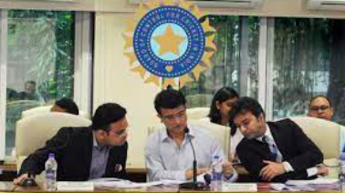

 The ICC Men’s T20 World Cup 2021 will be staged in the UAE and Oman due to the ongoing COVID-19 situation in India. The BCCI will remain the hosts of the event, which will now be held in Dubai International Stadium, the Sheikh Zayed Stadium in Abu Dhabi, the Sharjah Stadium, and the Oman Cricket Academy Ground, from 17 October to 14 November 2021.

The Board of Control for Cricket in India (BCCI) invites bids to provide services in relation to the design, hosting and maintenance of the Digital Archival Platform & Media Management Services of BCCI, through a tender process.
The RFP will remain for purchase till July 5, 2021.

The All-India Senior Selection Committee picked the Indian squad for the 3-match ODI series and the 3-match T20I series against Sri Lanka scheduled in the month of July. All matches will be played at the R Premadasa International Cricket Stadium, Colombo.
India’s squad: Shikhar Dhawan (Captain), Prithvi Shaw, Devdutt Padikkal, Ruturaj Gaikwad, Suryakumar Yadav, Manish Pandey, Hardik Pandya, Nitish Rana, Ishan Kishan (Wicket-keeper), Sanju Samson (Wicket-keeper), Yuzvendra Chahal, Rahul Chahar, K Gowtham, Krunal Pandya, Kuldeep Yadav, Varun Chakravarthy, Bhuvneshwar Kumar (Vice-captain), Deepak Chahar, Navdeep Saini, Chetan Sakariya.

1. Support to Indian Contingent for Tokyo Olympics: The summer Olympics is scheduled to be held in Tokyo from 23 July to 8th August 2021. The BCCI has decided to support Indian athletes in every form and manner it can. In that spirit, based on the request received from the IOA/MYAS, the Apex Council of BCCI has decided to extend support to the Indian Olympic Association and has pledged a monetary gesture of Rs. 10 crores. The BCCI wishes all the athletes representing India in the Olympics all the very best and hopes that they return with more medals than ever before.
2. Formation of Committee for compensation to Domestic Cricketers: The Apex Council has decided to form a committee to look into the issue of compensation for Indian domestic cricketers for domestic season 2020 and 2021. The Apex Council has mandated the Office Bearers of BCCI to form the committee and find a suitable compensatory mechanism for domestic cricketers, at the earliest possible.